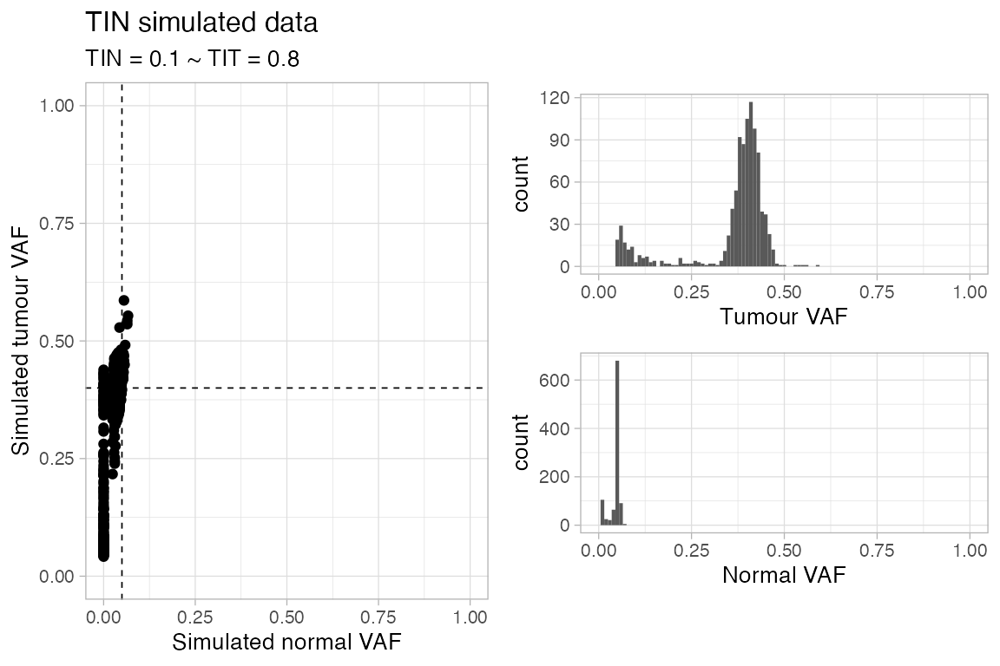
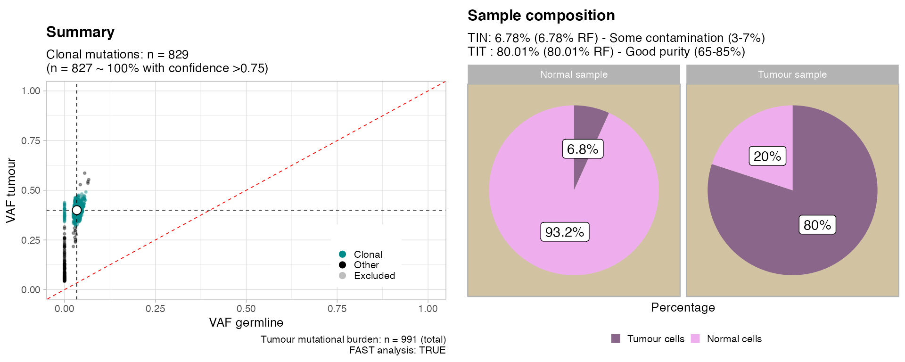
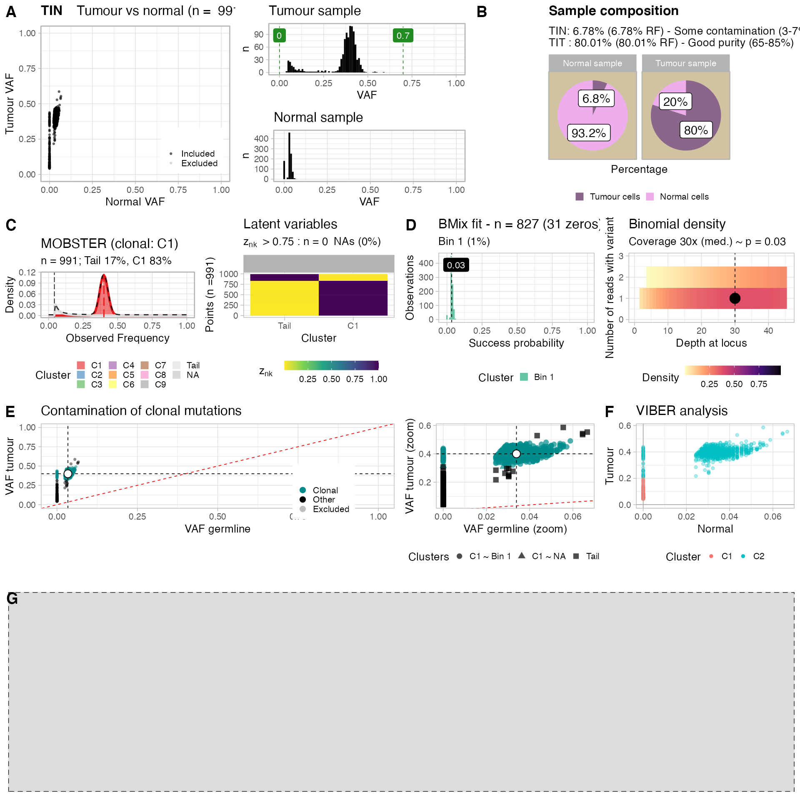

The TINC pipelines requires to run a single function: autofit.
Results can then be inspected using two report functions (see below).
TIN provides a function to generate a random dataset to test the tool. The input TIN and TIT parameters can be specified.
Note: the sampler generates VAFs using MOBSTER, and then samples some clonal mutations and contaminates the normal. This process is noisy and might return slightly lower values for the actual
TITestimate. The best setup to test TINC is with a simulated BAM file - e.g., created via BAMSurgeon.
set.seed(1234)
# Sample data from a tumour with 80% purity, and 10% contamination in the normal
sampled_data = random_TIN(TIT = .8, TIN = 0.1)
print(sampled_data)
#> $data
#> # A tibble: 993 × 14
#> chr from to ref alt simulated_clust… n_tot_count t_tot_count
#> <chr> <int> <dbl> <chr> <chr> <chr> <int> <int>
#> 1 chr18 33860136 3.39e7 A A C1 27 117
#> 2 chr18 28173591 2.82e7 C G C1 35 119
#> 3 chr10 52898080 5.29e7 G T C1 34 120
#> 4 chr8 93470255 9.35e7 T C C1 33 117
#> 5 chr19 31335571 3.13e7 T T C1 32 124
#> 6 chr18 58377450 5.84e7 G T C1 32 110
#> 7 chr19 21375348 2.14e7 T A C1 29 124
#> 8 chr17 27652549 2.77e7 A T C1 38 136
#> 9 chr1 246404286 2.46e8 A A C1 31 112
#> 10 chr20 42661362 4.27e7 G C C1 21 111
#> # … with 983 more rows, and 6 more variables: n_alt_count <dbl>,
#> # t_alt_count <dbl>, n_ref_count <dbl>, t_ref_count <dbl>, sim_t_vaf <dbl>,
#> # sim_n_vaf <dbl>
#>
#> $cna
#> # A tibble: 993 × 6
#> chr from to ref Major minor
#> <chr> <dbl> <dbl> <chr> <dbl> <dbl>
#> 1 chr18 33860135 33860138 A 1 1
#> 2 chr18 28173590 28173593 C 1 1
#> 3 chr10 52898079 52898082 G 1 1
#> 4 chr8 93470254 93470257 T 1 1
#> 5 chr19 31335570 31335573 T 1 1
#> 6 chr18 58377449 58377452 G 1 1
#> 7 chr19 21375347 21375350 T 1 1
#> 8 chr17 27652548 27652551 A 1 1
#> 9 chr1 246404285 246404288 A 1 1
#> 10 chr20 42661361 42661364 G 1 1
#> # … with 983 more rows
#>
#> $plot
The sampler generates random SNVs, and plain diploid CNA segments. These segments are not real and span just through each one of the simulated SNVs.
Data mappings - done internally by TINC - are also available via the load_TINC_input function.
load_TINC_input(x = sampled_data$data, cna = sampled_data$cna)
#>
#> ── Loading TINC input data ─────────────────────────────────────────────────────
#> ✓ Input data contains n = 993 mutations, selecting operation mode.
#> ! Found CNA data, retaining only mutations that map to segments with predominant karyotype ...
#>
#> [ CNAqc - CNA Quality Check ]
#> ℹ Using reference genome coordinates for: GRCh38.
#> ! Missing CCF column from CNA calls, adding CCF = 1 assuming clonal CNA calls.
#> ! Missing segments length from CNA calls, adding it to CNA calls.
#> ℹ Input n = 993 mutations for 993 CNA segments (993 clonal, 0 subclonal)
#> Warning in map_mutations_to_segments(snvs, cna %>% filter(CCF == 1)): [CNAqc] a
#> karyotype column is present in CNA calls, and will be overwritten
#> ✓ Mapped n = 993 mutations to clonal segments (100% of input)
#>
#> ── Genome coverage by karyotype, in basepairs. ──
#>
#> # A tibble: 1 × 4
#> minor Major n karyotype
#> <dbl> <dbl> <dbl> <chr>
#> 1 1 1 2979 1:1
#> ✓ n = 993 mutations mapped to CNA segments with karyotype 1:1 (largest available in basepairs).
#> ✓ Mutation with VAF within 0 and 0.7 ~ n = 993.
#> $mutations
#> # A tibble: 993 × 12
#> chr from to ref alt n_ref_count n_alt_count t_ref_count
#> <chr> <int> <dbl> <chr> <chr> <dbl> <dbl> <dbl>
#> 1 chr18 33860136 33860137 A A 26 1 79
#> 2 chr18 28173591 28173592 C G 34 1 67
#> 3 chr10 52898080 52898081 G T 33 1 66
#> 4 chr8 93470255 93470256 T C 31 2 60
#> 5 chr19 31335571 31335572 T T 31 1 78
#> 6 chr18 58377450 58377451 G T 31 1 66
#> 7 chr19 21375348 21375349 T A 28 1 72
#> 8 chr17 27652549 27652550 A T 37 1 84
#> 9 chr1 246404286 246404287 A A 30 1 67
#> 10 chr20 42661362 42661363 G C 21 0 72
#> # … with 983 more rows, and 4 more variables: t_alt_count <dbl>,
#> # karyotype <chr>, id <chr>, OK_tumour <lgl>
#>
#> $cna_map
#> ── [ CNAqc ] n = 993 mutations in 993 segments (993 clonal + 0 subclonal). Geno
#>
#> 1:1 [n = 993, L = 0 Mb] ■■■■■■■■■■■■■■■■■■■■■■■■■■■
#> ℹ Sample Purity: 80% ~ Ploidy: 2.
#>
#> $what_we_used
#> [1] "1:1"TINC fits the data via the autofit function.
A flag FAST sets faster set of parameters to determine TIN and TIT scores - we usually this for prototyping analyses and then turn it to FALSE.
# Autofit function
TINC_fit = autofit(sampled_data$data, cna = NULL, FAST = TRUE)
#> [ TINC ]
#>
#> ── Loading TINC input data ─────────────────────────────────────────────────────
#> ✓ Input data contains n = 993 mutations, selecting operation mode.
#> ✓ Mutation with VAF within 0 and 0.7 ~ n = 993.
#>
#> ── Analysing tumour sample with MOBSTER ────────────────────────────────────────
#>
#> [ MOBSTER fit ]
#> ✔ Loaded input data, n = 993.
#> ❯ n = 993. Mixture with k = 1,2 Beta(s). Pareto tail: TRUE and FALSE. Output
#> clusters with π > 0.02 and n > 10.
#> ! mobster automatic setup FAST for the analysis.
#> ❯ Scoring (without parallel) 2 x 2 x 2 = 8 models by reICL.
#> ℹ MOBSTER fits completed in 3.3s.
#> ── [ MOBSTER ] My MOBSTER model n = 993 with k = 1 Beta(s) and a tail ──────────
#> ● Clusters: π = 70% [C1] and 30% [Tail], with π > 0.
#> ● Tail [n = 281, 30%] with alpha = 1.3.
#> ● Beta C1 [n = 712, 70%] with mean = 0.39.
#> ℹ Score(s): NLL = -1075.25; ICL = -2029.1 (-2109.1), H = 80.01 (0). Fit
#> converged by MM in 12 steps.
#> ℹ Using the location likelihood heuristic to inspect mutations' distribution
#> ✓ Cluster C1: 60% of counts in 12 chromosomes (spread over >20% of used chromosomes: 4.4).
#> ℹ Without CNA, TINC will estimate tumour purity as 2*x, with x the clonal peak.
#> ✓ MOBSTER found n = 703 clonal mutations from cluster C1
#>
#> ── Analysing normal sample with BMix ───────────────────────────────────────────
#>
#> ── BMix fit ────────────────────────────────────────────────────────────────────
#> ℹ Binomials k_B = 1 and 2, Beta-Binomials k_BB = 0; 4 fits to run.
#> ℹ Bmix best fit completed in 0 mins
#> ── [ BMix ] My BMix model n = 703 with k = 1 component(s) (1 + 0) ──────────────
#> • Clusters: π = 100% [Bin 1], with π > 0.
#> • Binomial Bin 1 with mean = 0.0331737832330221.
#> ℹ Score (model selection): ICL = 1603.31.
#> Scale for 'x' is already present. Adding another scale for 'x', which will
#> replace the existing scale.
#> Scale for 'fill' is already present. Adding another scale for 'fill', which
#> will replace the existing scale.
#> ✓ Binomial peaks 0.0331737832330221 with proportions 1. Clonal score 0.0331737832330221 with TINN 0.0663475664660443
#>
#> ── Analysing tumour and normal samples with VIBER ──────────────────────────────
#>
#> [ VIBER - variational fit ]
#> ℹ Input n = 993, with k < 5. Dirichlet concentration α = 1e-06.
#> ℹ Beta (a_0, b_0) = (1, 1); q_i = prior. Optimise: ε = 1e-06 or 1000 steps, r = 3 starts.
#> [easypar] 2021-12-21 18:09:43 - Overriding parallel execution setup [TRUE] with global option : FALSE
#> ✓ VIBER fit completed in 0.01 mins (status: converged)
#> ── [ VIBER ] My VIBER model n = 993 (w = 2 dimensions). Fit with k = 5 clusters.
#> • Clusters: π = 74% [C2] and 26% [C1], with π > 0.
#> • Binomials: θ = <0.03, 0.38> [C2] and <0, 0.09> [C1].
#> ℹ Score(s): ELBO = -139635.609. Fit converged in 21 steps, ε = 1e-06.
#> ✓ Reduced to k = 2 (from 5) selecting VIBER cluster(s) with π > 0.02, and Binomial p > 0 in w > 0 dimension(s).Summary of the results (with an S3 object)
print(TINC_fit)
#>
#> ── TINC profiler for bulk WGS ──────────────────────────────────────────────────
#> ! Copy Number data has not been used for this analysis.
#> → Mutations data: n = 993 out of 993 within range (100%).
#>
#> TIT : 77% (RF 77) ~ n = 703 clonal mutations, cluster C1
#> TIN : 7% (RF 7) ~ n = 659 with VAF > 0
#>
#> QC Tumour Good purity (65-85%)
#> QC Normal Some contamination (3-7%)Plot the results (with an S3 object).
plot(TINC_fit)
# Analogous to
# plot_simple_report(TINC_fit)Or make a more detailed report
plot_full_page_report(TINC_fit)
A similar fit object is available inside the package (called fit_example).